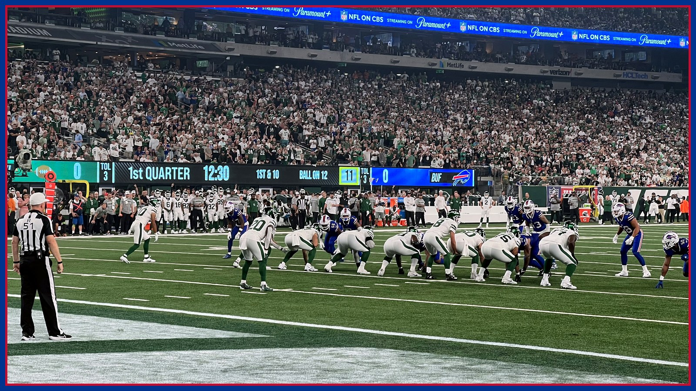

The Card: Buffalo is an 8.5-point favorite at the Jets, but the total is where the homework lives
Kalshi prices Buffalo at about an 80% chance to win Sunday at the Jets (1 PM ET, MetLife Stadium, CBS), and the sportsbook spread sits at Bills -8.5 with a 50.5 total. Friday's final report cleared Dion Dawkins and Alec Anderson, left Spencer Brown doubtful — and may bring Garrett Wilson back. The Card prices what changed.

Welcome back to The Card — I'm Matt Manzella, and this is the one desk on this site where we talk about the numbers that move money. This is Partner Content, presented by Kalshi, the regulated exchange where you trade on game outcomes instead of betting against a house. The rule here has not changed since this desk opened: every number below traces to a named source, every position gets logged in public, and there are no locks and no guarantees. Sunday's game is Buffalo (7-1) at the New York Jets (2-7), Nov. 15 at 1 PM ET at MetLife Stadium on CBS — and Friday's final injury report moved more of this matchup than anything said all week.
Start with the headline prices. Kalshi's game page gives the Buffalo Bills an 80% chance to win Sunday — Buffalo at about 80 cents — with its spread market putting the margin at about 7.5 points and its total market at about 50.5 points. The sportsbooks have pushed further: previews checked Saturday morning sit at Bills -8.5 with a 50.5 total. Recent history supports a big number — Buffalo has won five straight in this series while outscoring the Jets 160-58, per NorthJersey.com, and is 5-0 against the spread in the last five meetings, per WinningCappers. The market is pricing the league's No. 1 offense — 32.0 points and 386.4 yards per game, both first in the NFL, per NBC Sports' preview — against a 2-7 team on a four-game losing streak. What it may not have fully priced is which version of each roster actually shows up.
Friday's report was, on balance, good news for Buffalo's offense — and it starts on the left side. Left tackle Dion Dawkins (rib) and left guard Alec Anderson (ankle) were both full participants Friday and carry no game designation, per the official Friday report published by the Jets; center Connor McGovern (neck) and tight end Dalton Kincaid (ankle) also finished the week full with no designation, per the same report. That is a materially better line than the patched one that just won in Minnesota: four of Buffalo's five starting linemen are cleared, including both men who missed Monday night entirely. James Cook — 814 rushing yards, fifth in the league, per the Jets' official preview — runs behind most of his real line again.
The one dark line is the one this site tracked all week. Right tackle Spencer Brown (ankle) is doubtful after going limited in Wednesday's walk-through estimate and then not practicing Thursday or Friday, per the official report. Doubtful is not out — head coach Joe Brady said Friday, per NBC Sports via the team website, 'we'll see what it looks like tomorrow. That's why we're not ruling him out' — but Tylan Grable will start at right tackle if Brown cannot go, per NBC Sports, which would make Grable Buffalo's fill-in answer at a second tackle spot in three weeks. Cornerback Christian Benford (wrist) is questionable after upgrading to a full Friday practice, per the official report; defensive back Sam Franklin Jr. (shoulder) is also questionable, and Jordan Hancock and Tyrell Shavers are questionable inside their return windows. Buffalo's secondary question and Buffalo's right-tackle question both stay open until Sunday's inactives.
Now the side of this game the price is most likely underrating: the Jets' offense between the 20s is genuinely good. Per the Democrat and Chronicle's Saturday breakdown, Geno Smith ranks seventh among 22 quarterbacks with at least 250 dropbacks in EPA passing success rate, per SumerSports, with a 67.4% completion rate that is fifth-best, 24 completions of 20 or more yards that rank fourth, and a 1.1% interception rate that is fourth-best. The Jets have scored on their opening possession in five straight games — the longest active streak in the league, per the Jets' official preview. And their two best players may finally share a field: wide receiver Garrett Wilson (concussion) is questionable after a full Friday practice, per the official report, and head coach Aaron Glenn said Friday he is confident Wilson clears the protocol's final step, per the Jets' official notebook — Wilson leads the Jets with 43 catches for 527 yards, per the same notebook. Running back Breece Hall returned last week after missing five games with a quad injury, per the Jets' preview, and per the New York Post, Sunday would be the first time Wilson and Hall have played together since Week 3.
Here is where that offense dies, though, and it is the most important number in this column. The Jets rank 31st in red-zone touchdown rate at 40.7%, per the Democrat and Chronicle, and Smith's EPA success rate collapses to 35.0% inside the red zone, per the same breakdown. During their four-game losing streak, the Jets have run 132 plays in enemy territory and come away with only seven touchdowns against 13 field goals, per the same reporting. Moving the ball is not scoring, and field goals do not cover 8.5. Waiting for them is a Buffalo defense that has allowed a combined 16 points and fewer than 200 yards in each of its last two games, per the Democrat and Chronicle's reporting this week — plus a debut: new safety Amani Hooker will play Sunday with his role still to be determined, per the Bills' official site. Hooker's five interceptions are tied for the league lead. Smith almost never throws one. Something in that matchup has to give.
The total is where the two stories collide. The Over case is real: the Jets' defense has allowed 26 or more points in four straight games and ranks last in the league in EPA per dropback over the last month, per WinningCappers, and Sharp Football's worksheet has New York allowing 2.86 points per drive over its past four games — 31st in the league — after allowing 1.85 per drive before that. Buffalo has scored on a league-high 53.9% of its possessions, per the same worksheet, and Bills games have averaged 55.38 combined points this season, per Covers. The Under case is just as real: a Jets offense that trades touchdowns for field goals, a Buffalo defense in its best form of the season, and a road favorite on a short week after Monday night, built to lean on Cook and the clock the way it did in Minnesota — 42 minutes, 32 seconds of possession — if the game allows it.
So here is my card for Sunday, in order. One: Buffalo to win is my lean, but at about 80 cents on Kalshi the win price is fair, not cheap — there is no edge in chasing a price the whole market already believes, so I will check the live price before trading anything. Two: the spread at 8.5 is a pass until inactives. If Wilson is cleared, Benford is active and Grable is the only fill-in on Buffalo's line, the number is defensible; if Benford joins Brown on the sideline and Hooker's role is a package instead of a start, 8.5 points on the road in the division is a donation, not a position. Three: the total at 50.5 is the homework play — the Jets' red-zone failures say their drives end in threes, and Buffalo's defense says the same, so my lean is that New York has to prove it can finish before I price this game as a shootout. Trade the designations, not the rumors.
The Card is Partner Content presented by Kalshi. Trade this game and every game at kalshi.com/r/BNC — free $55 when you trade $25, code BNC. You must be 18 or older to trade on Kalshi. Prices move, nothing in this column is a guarantee, and this is analysis and entertainment, not financial advice. Trade only what you can afford to lose. Sunday's inactives, about 90 minutes before the 1 PM ET kickoff, are the last word on Brown, Benford and Wilson — everything above is priced to change when they post. Go Bills — and get Sunday's inactives and the full Jets fallout in your inbox every morning with The BNC Blitz.
The BNC Blitz is free: the day's Bills news, one stat that matters, and one take, every morning. Join to keep reading — and never miss the end of a story again.